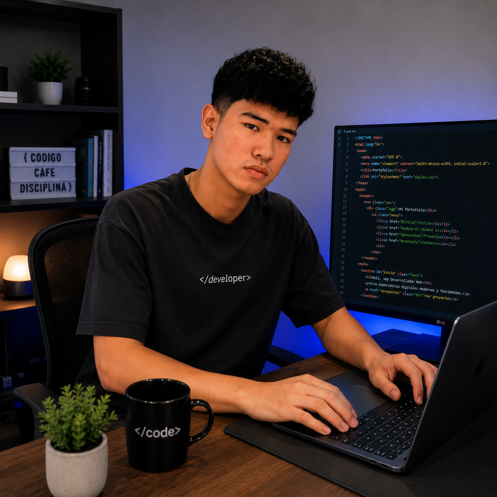

Anuar Díaz

Soy un desarrollador web basado en Colombia, apasionado por transformar pantallas estáticas en experiencias digitales memorables. No me conformo con los diseños genéricos; mi enfoque está en la creación de interfaces de alto nivel que cobran vida a medida que el usuario navega, combinando una estética impecable con una fluidez técnica absoluta.
Mi Trayectoria
Mi viaje en el mundo del código nació de una obsesión por los detalles visuales y la interactividad. Me he especializado en dominar el ecosistema frontend para construir sitios web responsivos donde cada animación tiene un propósito y cada transición se siente natural.
Para mí, un gran portafolio o una aplicación web exitosa no solo debe verse bien en el primer vistazo, sino que debe guiar al usuario de forma intuitiva, desplegando la información con elegancia y garantizando una velocidad de carga brutal. Cada línea de código que escribo está pensada para dejar una huella digital premium.
Mi Stack Tecnológico
Frontend
Backend
Database
Foco de Atención Actual
- Ingeniería y Desarrollo Web Profesional
- Rendimiento Frontend
- Soluciones Digitales
- Estructuración de Interfaces UI/UX Minimalistas